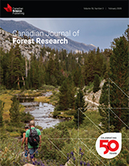

Competitive responses of seedlings and understory plants in longleaf pine woodlands: separating canopy influences above and below ground
Abstract
A trenching study was used to investigate above- and below-ground competition in a longleaf pine (Pinus palustris
P. Mill.) woodland. Trenched and nontrenched plots were replicated in
the woodland matrix, at gap edges, and in gap centers representing a
range of overstory stocking. One-half of each plot received a herbicide
treatment to remove the understory. We monitored pine survival and
growth, understory productivity, light level (gap fraction), and soil
resources. The overstory facilitated pine seedling survival. Pine
seedling growth was reduced as overstory stocking increased. Reduced
growth of seedlings was also observed in gaps when the understory was
left intact. Understory plants competed with seedlings by filling the
root gaps that developed as a result of overstory disturbance. Hardwood
growth increased in gaps, owing to decreased belowground competition
with adult pines, while growth of herbaceous plants and pine seedlings
increased with light availability. Large overstory gaps are not required
to initiate regeneration in longleaf pine woodlands. Retaining
overstory dispersed throughout the stand but variable in density,
through single-tree selection approaches, may be an alternative to
gap-based approaches. This approach would allow for the fuel continuity
needed to sustain the frequent fire required to maintain the diversity
characteristic of this type of woodland.
Résumé
Un
dispositif de tranchées a été utilisé pour étudier la compétition
aérienne et souterraine dans une station forestière dominée par le pin
des marais (Pinus palustris
P. Mill.). Des placettes avec ou sans tranchées ont été répétées dans
une matrice forestière, en bordure de trouées et au centre de trouées,
ce qui correspondait à un gradient de densité relative du couvert. La
moitié de chaque placette a été traitée à l’aide d’un herbicide pour
éliminer les plantes du sous-étage. Nous avons suivi la survie et la
croissance des pins, la productivité des plantes du sous-étage, la
lumière (ouverture du couvert) et les ressources du sol. Les ouvertures
dans le couvert dominant ont augmenté le taux de survie des semis de
pin. La croissance des semis de pin a été réduite par une augmentation
de la densité relative du couvert dominant. Une diminution de la
croissance des semis a aussi été observée dans les trouées où les
plantes de sous-étage n’avaient pas été éliminées. Les plantes du
sous-étage venaient en compétition avec les semis en comblant les
espaces exempts de racines qui sont apparus après la perturbation de
l’étage dominant. La croissance d’espèces feuillues a augmenté dans les
trouées à la suite d’une diminution de la compétition racinaire avec les
pins adultes, alors que les plantes herbacées et les semis de pin ont
augmenté leur croissance avec une augmentation de la disponibilité de la
lumière. Les grandes trouées dans le couvert dominant ne sont pas
nécessaires pour l’établissement de la régénération dans les stations
forestières dominées par le pin des marais. Le maintien d’un couvert
dispersé à travers le peuplement, mais de densité variable, à l’aide
d’une approche de jardinage par pied d’arbre peut constituer une
solution de remplacement aux approches basées sur les trouées. Cette
approche favoriserait la production régulière des combustibles
nécessaires pour soutenir les feux fréquents requis pour maintenir la
diversité caractéristique de ce type de forêt.
References
Allen, R.M. 1954. Shade may improve longleaf survival. USDA For. Serv. Res. Note SO-90.
Battaglia,
M.A., Mou, P., Palik, B., and Mitchell, R.J. 2002. The effect of
spatially variable overstory on the understory light environment of an
open-canopied longleaf pine forest. Can. J. For. Res. 32: 1984–1991.
Battaglia, M.A., Mitchell, R.J., Mou, P.P., and Pecot, S.D. 2003. Light transmittance estimates in a longleaf pine woodland. For. Sci. 49: 752–762.
Belsky, A.J. 1994. Influences of trees on savanna productivity — tests of shade, nutrients, and tree-grass competition. Ecology, 75: 922–932.
Belsky,
A.J., and Canham, C.D. 1994. Forest gaps and isolated savanna trees: an
application of patch dynamics in two ecosystems. BioScience, 44: 77–84.
Binkley, D., and Matson, P. 1983. Ion exchange resin bag method for assessing forest soil nitrogen availability. Soil Sci. Soc. Am. J. 47: 1050–1052.
Boyer,
W.D. 1989. Response of planted longleaf pine bare-root and container
stock to site preparation and release: fifth-year results. USDA For.
Serv. Gen. Tech. Rep. SO-74.
Boyer, W.D. 1990. Pinus palustris Mill. Longleaf pine. In Silvics of North America: I. Conifers. USDA Agric. Agric. Handb. 654. pp. 405–412.
Boyer,
W.D. 1991. Effects of a single chemical treatment on long-term hardwood
development in a young pine stand. USDA For. Serv. Gen. Tech. Rep.
SE-70. pp. 599–606.
Bragg, W.K., Knapp, A.K., and Briggs, J.M. 1993. Comparative water relations of seedling and adult Quercus species during gallery forest expansion in tallgrass prairie. For. Ecol. Manage. 56: 29–41.
Brockway, D.G., and Outcalt, K.W. 1998. Gap-phase regeneration in longleaf pine–wiregrass ecosystems. For. Ecol. Manage. 106: 125–139.
Brockway,
D.G., and Outcalt, K.W. 2000. Restoring longleaf pine wiregrass
ecosystems: hexazinone application enhances effects of prescribed fire. For. Ecol. Manage. 137: 121–138.
Brockway,
D.G., Outcalt, K.W., Guldin, J.M., Boyer, W.D., Walker, J.L., Rudolph,
D.C., Rummer, R.B., Barnett, J.P., Jose, S., and Nowak, J. 2005.
Uneven-aged management of longleaf pine forests: a scientist and manager
dialogue. USDA For. Serv. Gen. Tech. Rep. SRS-78.
Brown, J.R., and Archer, S. 1989. Woody plant invasion of grasslands: establishment of honey mesquite (Prosopis glandulosa var. glandulosa) on sites differing in herbaceous biomass and grazing history. Oecologia, 80: 19–26.
Brown,
J.R., and Archer, S.R. 1990. Water relations of a perennial grass and
seedlings vs. adult woody plants in a subtropical savanna, Texas. Oikos, 57: 366–374.
Callaway, R.M., and Walker, L.R. 1997. Competition and facilitation: a synthetic approach to interactions in plant communities. Ecology, 78: 1958–1965.
Callaway, R.M., Nadkarni, N.M., and Mahall, B.E. 1991. Facilitation and interference of Quercus douglasii on understory productivity in central California. Ecology, 72: 1484–1499.
Coomes,
D.A., and Grubb, P.J. 2000. Impacts of root competition in forests and
woodlands: a theoretical framework and review of experiments. Ecol. Monogr. 70: 171–207.
Ferguson,
S.A., Ruthford, J.E., McKay, S.J., Wright, D., Wright, C., and Ottmar,
R. 2002. Measuring moisture dynamics to predict fire severity in
longleaf pine forests. Int. J. Wildl. Fire, 11: 267–279.
Glitzenstein,
J.S., Platt, W.J., and Streng, D.R. 1995. Effects of fire regime and
habitat on tree dynamics in north Florida longleaf pine savannas. Ecol. Monogr. 65: 441–476.
Golladay, S.W., and Battle, J. 2002. Effects of flooding and drought on water quality in gulf coastal plain streams in Georgia. J. Environ. Qual. 31: 1266–1272.
Gordon, D.R., and Rice, K.J. 1992. Partitioning of space and water between two California annual grassland species. Am. J. Bot. 79: 967–976.
Gordon, D.R., Welker, J.M., Menke, J.W., and Rice, K.J. 1989. Competition for soil water between annual plants and blue oak (Quercus douglasii) seedlings. Oecologia, 79: 533–541.
Grace,
S.L., and Platt, W.J. 1995. Effects of adult tree density and fire on
the demography of pregrass stage juvenile longleaf pine (Pinus palustris Mill.). J. Ecol. 83: 75–86.
Hardin, E.D., and White, D.L. 1989. Rare vascular plant taxa associated with wiregrass (Aristida stricta) in the southeastern United States. Nat. Areas J. 9: 234–245.
Hedman,
C.W., Grace, S.L., and King, S.E. 2000. Vegetation composition and
structure of southern coastal plain pine forests: an ecological
comparison. For. Ecol. Manage. 134: 233–247.
Hendricks,
J.J., Hendrick, R.L., Wilson, C.A., Mitchell, R.J., Pecot, S.D., and
Guo, D. 2006. Assessing the patterns and controls of fine-root dynamics:
an empirical and methodological review. J. Ecol. 94: 40–57.
Holl, K.D. 1998. Effects of above- and below-ground competition of shrubs and grass on Calophyllum brasiliense (Camb.) seedling growth in an abandoned tropical pasture. For. Ecol. Manage. 10: 187–195.
Holmgren, M., Scheffer, M., and Huston, M.A. 1997. The interplay of facilitation and competition in plant communities. Ecology, 78: 1966–1975.
Jacqmain,
E.I., Jones, R.H., and Mitchell, R.J. 1999. Influences of frequent
cool-season burning across a soil moisture gradient on oak community
structure in longleaf pine ecosystems. Am. Midl. Nat. 141: 85–100.
Jones,
R.H., Mitchell, R.J., Stevens, G.N., and Pecot, S.D. 2003. Controls of
fine root dynamics across a gradient of gap sizes in a pine woodland. Oecologia, 134: 132–143.
Kindell,
C.E., Winn, A.A., and Miller, T.E. 1996. The effects of surrounding
vegetation and transplant age on the detection of local adaptation in
the perennial grass Aristida stricta. J. Ecol. 84: 745–754.
Kirkman,
L.K., Mitchell, R.J., Helton, R.C., and Drew, M.B. 2001. Productivity
and species richness across an environmental gradient in a
fire-dependent ecosystem. Am. J. Bot. 88: 2119–2128.
Kirkman, L.K., Goebel, P.C., Palik, B.J., and West, L.T. 2004. Predicting plant species diversity in a longleaf pine landscape. Ecoscience, 11: 80–93.
Knapp,
A.K., and Smith, W.K. 1989. Influence of growth form on
ecophysiological responses to variable sunlight in subalpine plants. Ecology, 70: 1069–1082.
Knapp, A.K., Smith, W.K., and Young, D.R. 1989. Importance of intermittent shade to the ecophysiology of subalpine herbs. Funct. Ecol. 3: 753–758.
Lewis,
S.L., and Tanner, E.V.J. 2000. Effects of above- and belowground
competition on growth and survival of rain forest tree seedlings. Ecology, 81: 2525–2538.
Littell,
R.C., Milliken, G.A., Stroup, W.W., and Wolfinger, R.D. 1996. SAS
system for mixed models. SAS Institute Inc., Cary, N.C.
McGuire,
J.P., Mitchell, R.J., Moser, E.B., Pecot, S.D., Gjerstad, D.H., and
Hedman, C.W. 2001. Gaps in a gappy forest: plant resources, longleaf
pine regeneration, and understory response to tree removal in longleaf
pine savannas. Can. J. For. Res. 31: 765–778.
McPherson, G.R. 1993. Effects of herbivory and herbs on oak establishment in a semi-arid temperate savanna. J. Veg. Sci. 4: 687–692.
McPherson, G.R. 1997. Ecology and management of North American savannas. The University of Arizona Press, Tucson, Ariz.
Miller,
T.E., and Werner, P.A. 1987. Competitive effects and responses between
plant species in a first-year old-field community. Ecology, 68: 1201–1210.
Mitchell, R.J., Kirkman, L.K., Pecot, S.D., Wilson, C.A., Palik, B.J., and Boring, L.R. 1999a. Patterns and controls of ecosystem function in longleaf pine – wiregrass savannas. I. Aboveground net primary productivity. Can. J. For. Res. 29: 743–751.
Mitchell, R.J., Zutter, B.R., Gjerstad, D.H., Glover, G.R., and Wood, C.W. 1999b. Competition among secondary-successional pine communities: a field study of effects and responses. Ecology, 80: 857–872.
Mitchell,
R.J., Hiers, J.K., O’Brien, J.J., Jack, S.B., and Engstrom, R.T. 2006.
Silviculture that sustains: the nexus between silviculture, frequent
prescribed fire, and conservation of biodiversity in longleaf pine
forests of the southeastern United States. Can. J. For. Res. 36: 2713–2723.
Monk, C.D., and Gabrielson, F.C. 1985. Effects of shade, litter and root competition on old-field vegetation in South Carolina. Bull. Torrey Bot. Club, 112: 383–392.
Ostertag, R. 1998. Belowground effects of canopy gaps in a lowland tropical wet forest. Ecology, 79: 1294–1304.
Palik,
B.J., Mitchell, R.J., Houseal, G., and Pederson, N. 1997. Effects of
canopy structure on resource availability and seedling responses in a
longleaf pine ecosystem. Can. J. For. Res. 27: 1458–1464.
Palik,
B.J., Mitchell, R.J., and Hiers, J.K. 2002. Modeling silviculture after
natural disturbance to sustain biodiversity in the longleaf pine (Pinus palustris) ecosystem: balancing complexity and implementation. For. Ecol. Manage. 155: 347–356.
Palik,
B., Mitchell, R.J., Pecot, S., Battaglia, M., and Pu, M. 2003. Spatial
distribution of overstory retention influences resources and growth of
longleaf pine seedlings. Ecol. Appl. 13: 674–686.
Parsons,
W.F.J., Knight, D.H., and Miller, S.L. 1994. Root gap dynamics in
lodgepole pine forest - nitrogen transformations in gaps of different
size. Ecol. Appl. 4: 354–362.
Pecot,
S.D., Horsley, S.B., Battaglia, M.A., and Mitchell, R.J. 2005. The
influence of canopy, sky condition, and solar angle on light quality in
longleaf pine woodlands. Can. J. For. Res. 35: 1356–1366.
Pessin, L.J. 1938. The effect of vegetation on the growth of longleaf pine seedlings. Ecol. Monogr. 8: 115–149.
Pessin, L.J. 1939a. Density of stocking and character of ground cover a factor in longleaf pine reproduction. J. For. 37: 255–258.
Pessin, L.J. 1939b. Root habits of longleaf pine and associated species. Ecology, 20: 47–57.
Rich, P.M. 1990. Characterizing plant canopies with hemispherical photography. Remote Sens. Rev. 5: 13–29.
Riegel, G.M., Miller, R.F., and Krueger, W.C. 1992. Competition for resources between understory vegetation and overstory Pinus ponderosa in northeastern Oregon. Ecol. Appl. 2: 71–85.
Rodríguez-Trejo,
D.A., Duryea, M.L., White, T.L., English, J.R., and McGuire, J.P. 2003.
Artificially regenerating longleaf pine in canopy gaps: initial
survival and growth during a year of drought. For. Ecol. Manage. 180: 25–36.
Rudolph,
D.C., and Conner, R.N. 1996. Red-cockaded woodpeckers and silvicultural
practice: Is uneven-aged silviculture preferable to even-aged? Wildl. Soc. Bull. 24: 330–333.
Saterson,
K.A., and Vitousek, P.M. 1984. Fine-root biomass and nutrient cycling
in Aristida stricta in a North Carolina coastal plain savanna. Can. J. Bot. 62: 823–829.
Scholes, R.J., and Archer, S.R. 1997. Tree-grass interactions in savannas. Annu. Rev. Ecol. Syst. 28: 517–544.
Simberloff, D. 1999. The role of science in the preservation of forest biodiversity. For. Ecol. Manage. 115: 101–111.
Smith,
S.D., Patten, D.T., and Monson, R.S. 1987. Effects of artificially
imposed shade on a Sonoran Desert ecosystem: microclimate and
vegetation. J. Arid Environ. 13: 65–82.
Stoll, P., Weiner, J., and Schmid, B. 1994. Growth variation in a naturally established population of Pinus sylvestris. Ecology, 75: 660–670.
Tiedemann, A.R., and Klemmedson, J.O. 1977. Effect of mesquite trees on vegetation and soils in desert grassland. J. Range Manage. 30: 361–367.
Tiedemann, A.R., Klemmedson, J.O., and Ogden, P.R. 1971. Response of 4 perennial southwestern grasses to shade. J. Range Manage. 24: 442–447.
Topp,
G.C., Davis, J.L., and Annan, A.P. 1980. Electromagnetic determination
of soil water content: measurements in coaxial transmission lines. Water Resour. Res. 16: 574–582.
Toumey, J.W. 1929. The vegetation of the forest floor: light versus soil moisture. In Proceedings of the International Congress of Plant Sciences, Ithaca, N.Y., 16–23 August 1926. Vol. 1. Edited by B.M. Duggar. George Banta Publishing, Menahsa, Wis. pp. 575–590.
van
Gardingen, P.R., Jackson, G.E., Hernandez-Daumas, S., Russell, G., and
Sharp, L. 1999. Leaf area index estimates obtained for clumped canopies
using hemispherical photography. Agric. For. Meteorol. 94: 243–257.
Vetaas, O.R. 1992. Micro-site effects of trees and shrubs in dry savannas. J. Veg. Sci. 3: 337–344.
Walker,
J., and Peet, R.K. 1984. Composition and species diversity of
pinewiregrass savannas of the Green Swamp, North Carolina. Vegetatio, 55: 163–179.
Walter, H. 1971. Ecology of tropical and subtropical vegetation. Oliver and Boyd, Edinburgh, UK.
Weltzin,
J.F., and Coughenour, M.B. 1990. Savanna tree influence on understory
vegetation and soil nutrients in northwestern Kenya. J. Veg. Sci. 1: 325–334.
Williamson, G.B., and Black, E.M. 1981. High temperature of forest fires under pines as a selective advantage over oaks. Nature, 293: 643–644.
Wilson, J.R. 1989. The eleventh hypothesis: shade. Agron. Today, 2: 14–15.
Information & Authors
Information
Published In

Canadian Journal of Forest Research
Volume 37 • Number 3 • March 2007
Pages: 634 - 648
History
Received: 6 March 2006
Accepted: 30 August 2006
Published online: 11 June 2007